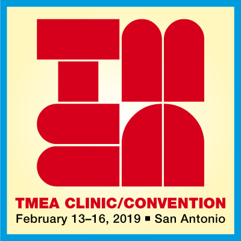

Music
I have always loved listening to and playing classical music, especially big orchestral symphonies like Pines of Rome and Symphonic Metamorphosis. I have been playing trumpet since I was 9 years old, and I still can't put it down. In high school, I studied music theory and qualified twice as principle trumpet in the Texas All-State Philharmonic Orchestra. I participate in the Texas A&M University Wind Symphony every semester to get my mind off of my most rigorous classes a few times a week, and I have loved getting to know the other instrumentalists and making incredible music.

I cannot oversell the remarkable program I have been a part of for the past three years. As a college that no longer has a major for music, our school has been granted incredible opportunities under the leadership of Dr. Timothy Rhea. In May 2017, the Wind Symphony was granted the priviledge of performing concerts in Hawai'i (pictured above). I also participate in the Philharmonic Orchestra at Texas A&M offered to Wind Symphony players who volunteer. I have enjoyed playing symphonies like Nabucco Overture and Berber of Seville every semester I have been at Texas A&M.
In addition to our trip to Hawai'i, the Texas A&M University Wind Symphony was invited to play at the Texas Music Educator's Association Conference in San Antonio in February 2019. We commissioned and performed an exciting new piece by Donald Grantham, and I got the chance to perform one of my favorite trumpet solos in the second movement of Persichetti's Symphony for Band, Movement 2. That concert was one of my proudest moments as a trumpet player since many of my past music educators got to see me perform in a hall that I'd had many great experiences in before. I wish I could post a recording of it, but the album is on sale at this link.
Starting Fall 2019, we will have a new Music Activities Center to rehearse in with state of the art technology. We have also been invited to clinic at the Midwest Clinic and Convention held in Chicago December 2019. To keep up with all the newest developments with the Wind Symphony, see our Facebook page.
Believe it or not, I once wanted to study music professionally, so I wrote a lot of music in my free time. Here are just some pieces I wrote over the summer after taking a music theory class that, although cheesy, have gotten me thousands of views on Musescore. Someday, I plan to use my music talents with technology, such as an IoT project. Music is often inspired by what our senses detect in our surroundings, so I want to see how much a machine learning algorithm could train on given the world around it.